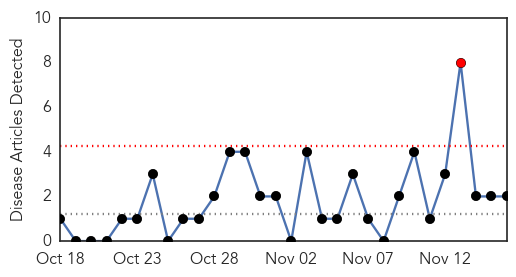
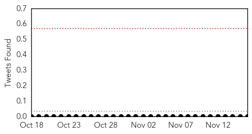
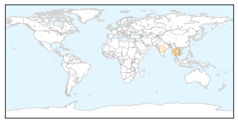
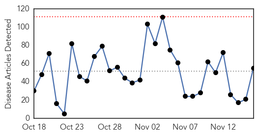
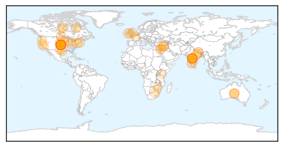

Pertussis
30-Day Web Trend
1 alerts, 0 warnings

30-Day Twitter Trend
0 alerts, 0 warnings

Article Locations
Article Confidences
Top Articles:
Top Tweets:
-
No tweets found for Nov 16, 2015
Unknown
30-Day Web Trend
0 alerts, 0 warnings

30-Day Twitter Trend
0 alerts, 0 warnings

Article Locations
Article Confidences
Top Articles:
- 0.996
- Flu Activity Increasing In Nebraska
- 0.990
- Early flu outbreak kills two Iowans, experts urge shots
- 0.978
- Parts of India experience an increase in leptospirosis
- 0.967
- Often free, flu shots can save billions for consumers, businesses
- 0.959
- NunatsiaqOnline 2015-11-16: NEWS: Voluntary TB clinic to run until mid-December in Nunavik community
- 0.958
- Hospital to give flu shots on November 17
- 0.834
- Rare TB case in US shows difficulty diagnosing, treating children
- 0.819
- WARNING: Stay away from hospital if you have diarrhoea or vomiting
- 0.809
- Child with rare drug-resistant TB successfully treated by US doctors
- 0.790
- OIE scientists call for reduction of rinderpest virus stores
- 0.761
- A Man with a Lifetime Medical Mission
- 0.747
- Protection for Somali children with new vaccine against deadly disease - Somalia
- 0.727
- Health Department offering flu clinic
- 0.722
- Child’s case serves as ‘wake-up call’ to drug-resistant TB, doctors say
- 0.719
- Rare TB case shows difficulty diagnosing, treating children
- 0.706
- News Centre
- 0.695
- Syphilis outbreak in northern Manitoba
- 0.695
- Rare TB case shows difficulty diagnosing, treating children
- 0.695
- Soweto health workers not paid amid 'admin problems'
- 0.692
- Rare TB case shows difficulty diagnosing, treating children
- 0.690
- Rash of E. coli cases highlights foodborne illness problem
- 0.685
- UC Health alerting patients about leaked medical records
- 0.675
- Pharmacies in capital lack vital drugs
- 0.666
- Water woes in Zimbabwe’s urban areas in the middist Of plenty
- 0.648
- Toddler, 2, Returns From India With Rare Case Of Tuberculosis, Highlights Concerns Of Drug-Resistant TB Strains
- 0.640
- 580 CFRA News Talk Radio :: HEALTHBEAT: Tot's rare hard-to-treat TB highlights need to improve care for children worldwide :: News
- 0.628
- Rare TB case shows difficulty diagnosing, treating children
- 0.623
- Eight bat attacks prompt health warning for Hunter residents
- 0.615
- It was launched a public information campaign to try to keep chronic wasting disease from reaching
- 0.610
- DOH-Caraga strengthens campaign to eliminate filariasis, malaria
- 0.607
- 4,000 Israelis a year die from resistant superbugs
- 0.605
- NHS launches winter campaign to keep people out of hospital
- 0.603
- Obama: Refugee crisis should not be equated with terrorism
- 0.603
- French police raid dozens of homes in search of suspected jihadists
- 0.603
- Hollande to hold talks with Kerry on Paris attacks
- 0.603
- Paris attack probe turns to Belgium’s ‘Islamist pit stop’ of Molenbeek
- 0.603
- Is ‘the Belgian’ Abou Omar behind the Paris attacks?
- 0.602
- Eight bat attacks prompt health warning for Hunter residents
- 0.599
- IPPF’s humanitarian program: The SPRINT Initiative is providing crucial medical and sexual and reproductive (SRH) health services to #TyphoonKOPPU affected areas in Philippines - Philippines
- 0.593
- Naugatuck Valley Health District Awarded National Accreditation by the Public Health Accreditation Board
- 0.593
- How the Modi government is fuelling a dangerous comeback of drug-resistant microbes
- 0.586
- NMA to pile pressure on govt to avert crisis in health sector
- 0.578
- If you think you’re in poor health, you’re more likely to catch a cold
- 0.577
- Child with drug-resistant TB successfully treated at Johns Hopkins Children's Center
- 0.565
- African health experts pledge action on non-communicable diseases - Xinhua
- 0.563
- ‘Ireland is on the brink of a perfect storm in our health services’
- 0.563
- Ads saying Cold-FX and flu shot work 'better together' questioned by experts
- 0.561
- Raigmore Hospital ward stays shut after vomiting bug outbreak
- 0.550
- Ask Hutch: Law ads overstate ease of big wins; from small trains to zoo trains, railcars and visits on readers’ minds
- 0.548
- Public Health Accreditation Board Awards Five-Year Accreditation to 17 Health Departments
Showing top 50 articles...
Top Tweets:
- 0.515
- RT: Don’t wait – get the flu vaccine and protect yourself from seasonal flu. https://t.co/F9Ds8DwofQ HealthySelf